Driveways & Paver Relays
Natural stone and interlocking paver driveways, driveway extensions, levelling and paver relays.
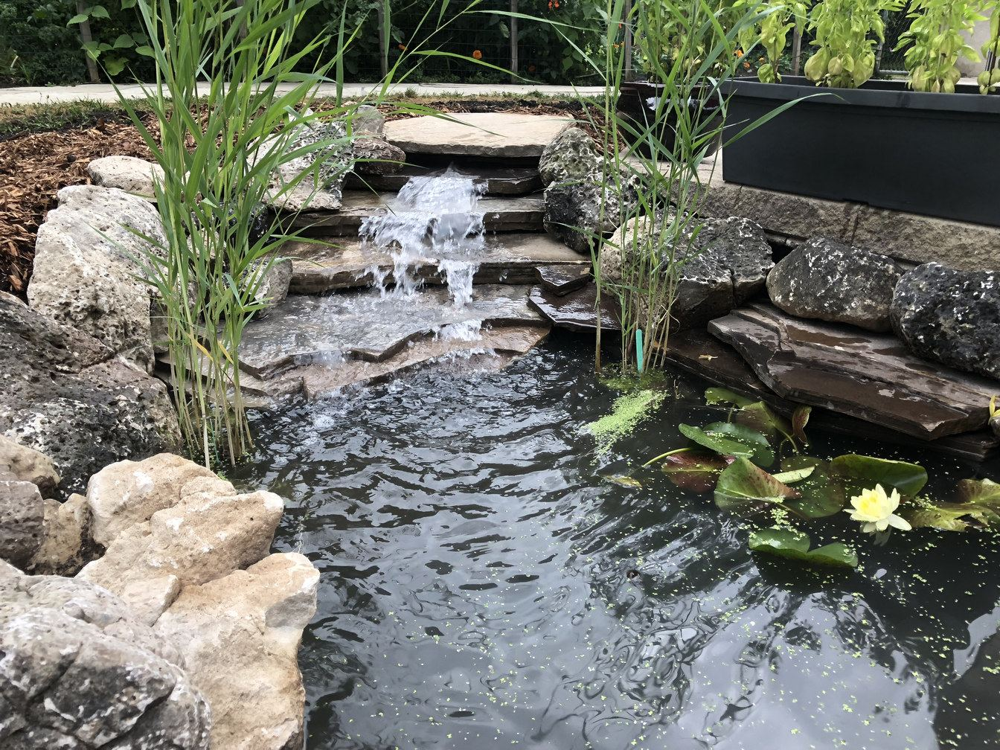
London, Ontario · Stone masonry & landscape
Driveways, walkways, patios, steps, retaining walls and water features, built by stonemason Brian O'Connor, who has worked in the trade since 2004.
What we build
We specialize in natural stone and interlocking paver hardscapes, stone masonry and landscape work. Turn your outdoor space into your own landscaped oasis.
Natural stone and interlocking paver driveways, driveway extensions, levelling and paver relays.
Flagstone and interlocking paver walkways, front entries and custom-cut borders.
Flagstone and paver patios, raised patios, pool decks, fire pits and patios under decks.
Natural, rock-faced and faux stone steps, mortared flagstone steps and landings.
Natural stone, armour stone and engineered retaining walls, garden walls, columns and wall cladding.
Fish ponds, stone waterfalls, aquatic plantings, pond lighting and dry river beds.
Mortared flagstone, stone coping, dry stone walls, BBQs, fireplaces, fire pits and brick restoration.
Property drainage, water runoff management, French drains, garden beds, rockery, mulch and new sod.
Project gallery
A selection of our work around London, Ontario. Tap any photo to see it larger.
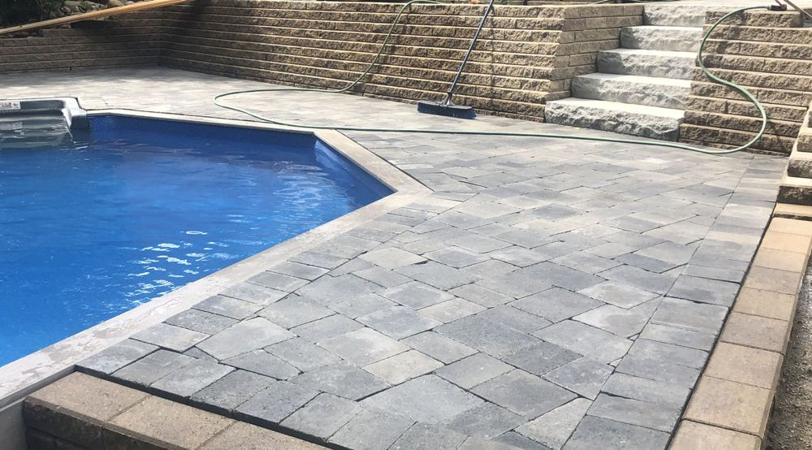
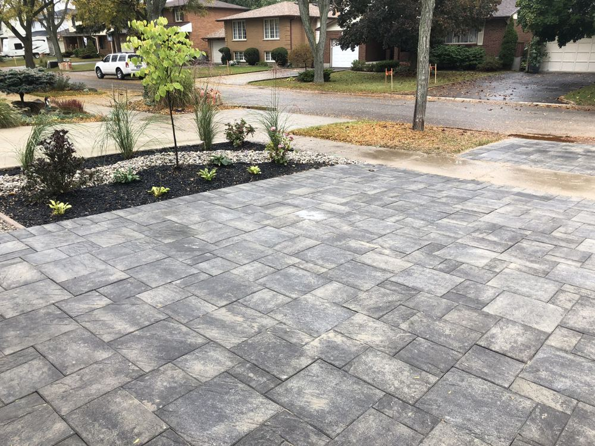
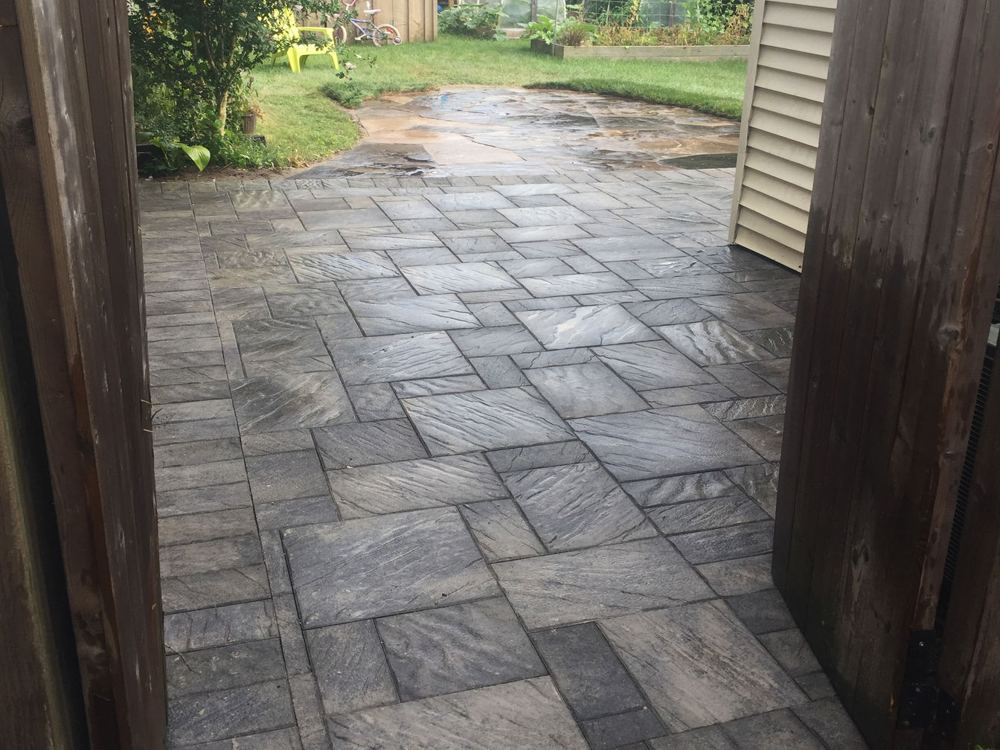
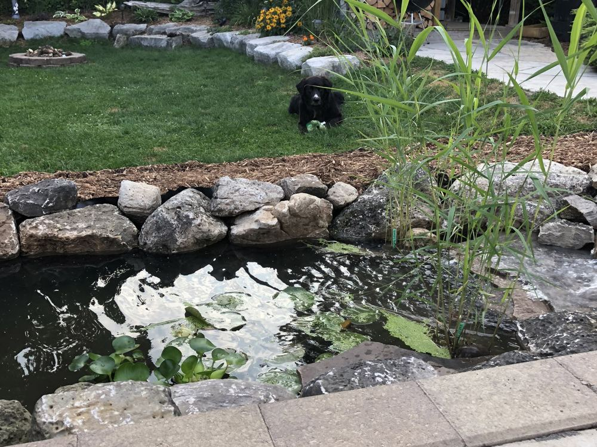
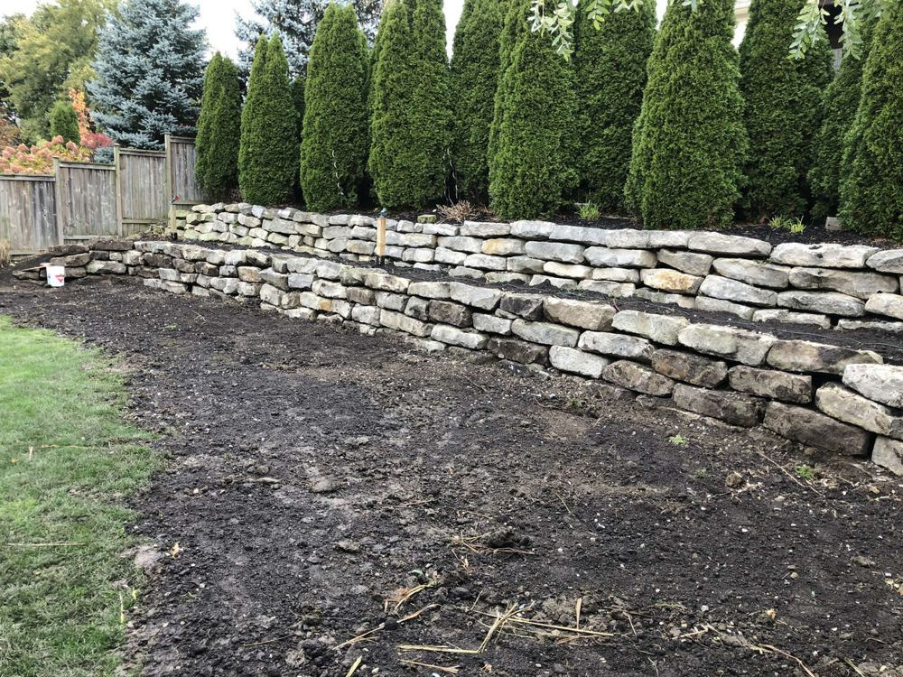
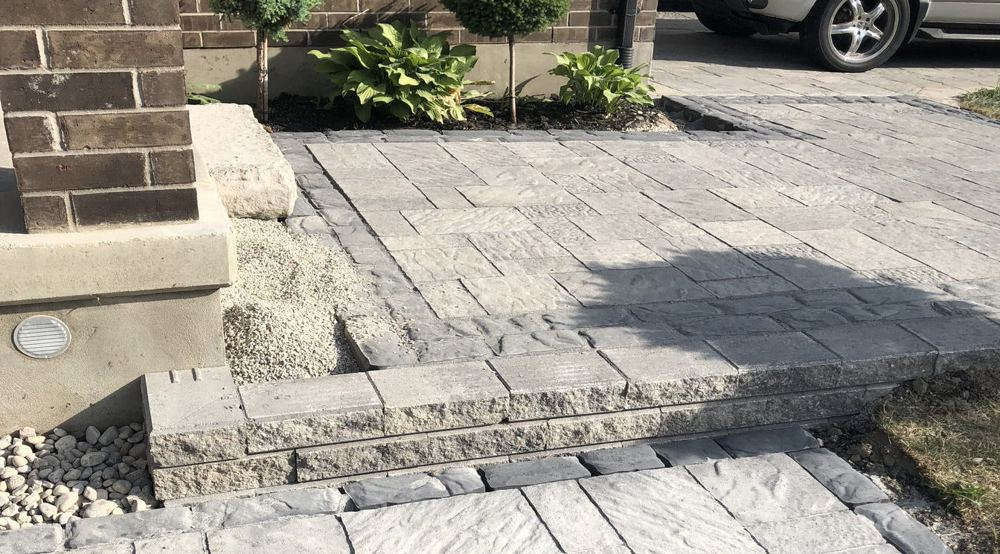
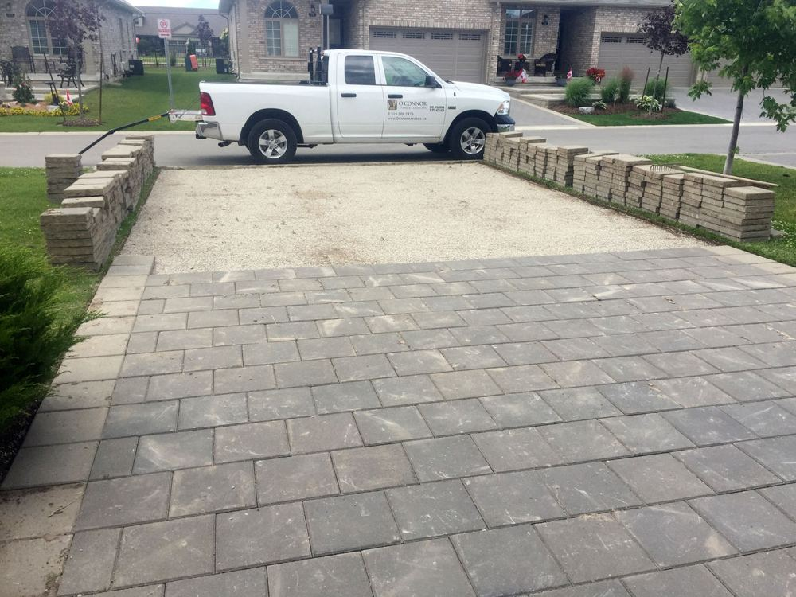
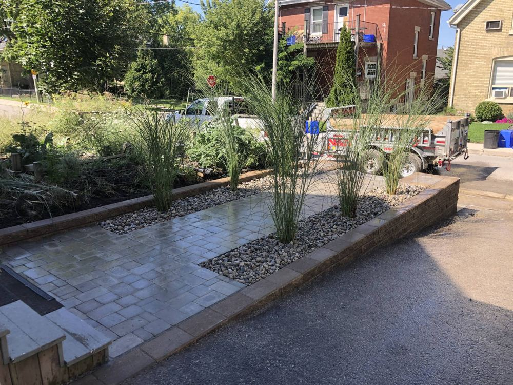
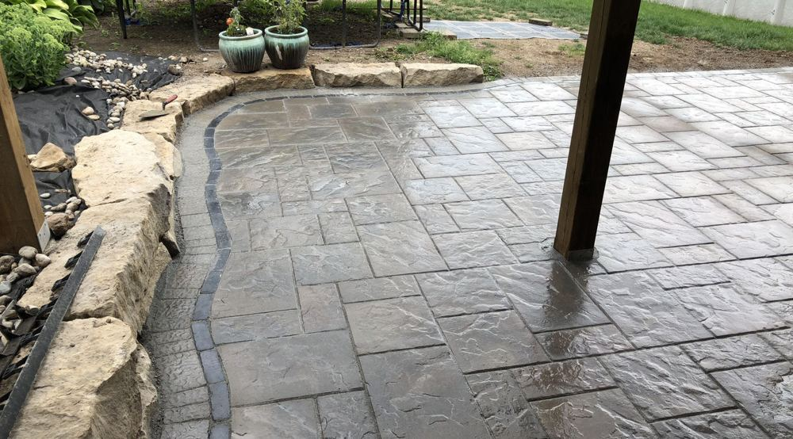
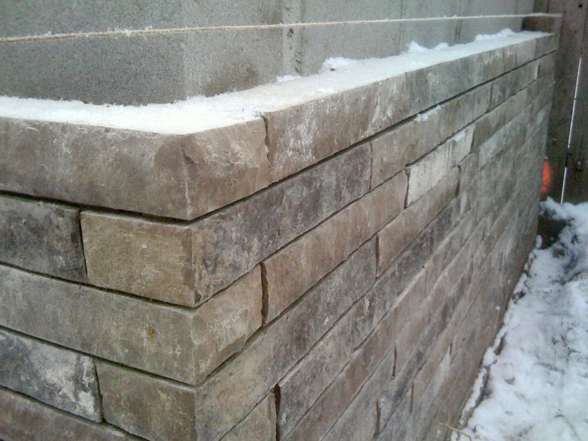
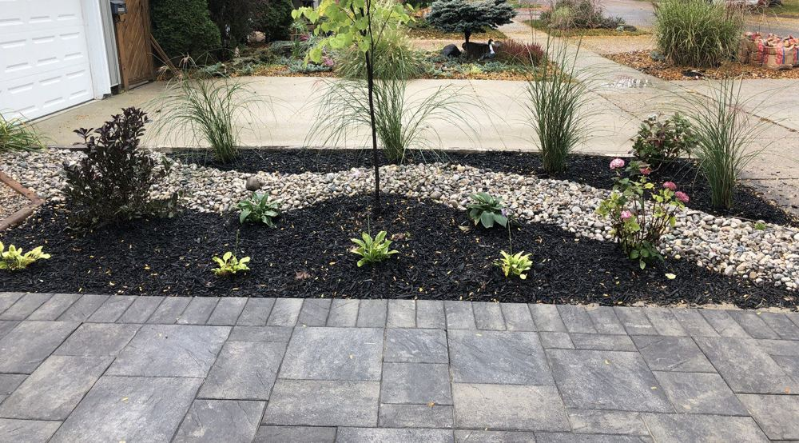
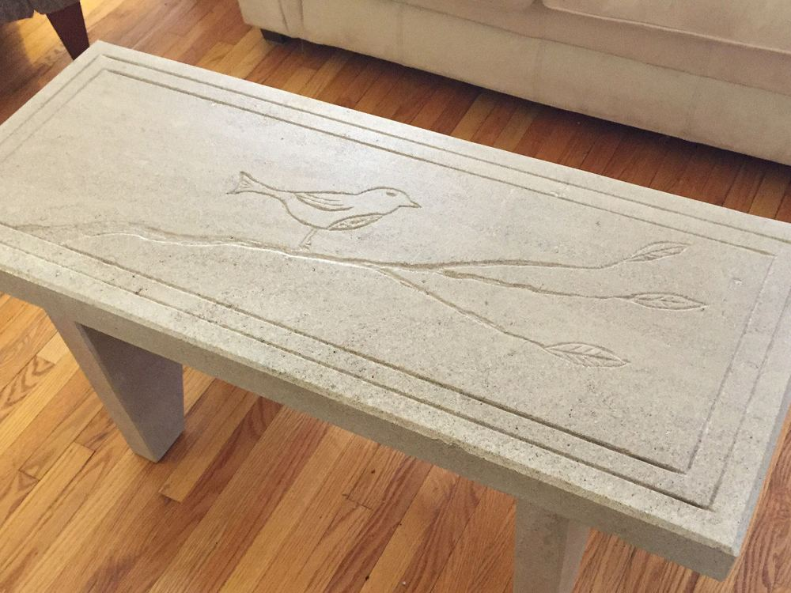
About
O'Connor Stone & Landscape is dedicated to making your vision a reality.
Brian O'Connor has been working diligently in the skilled trade of stone masonry and landscaping since 2004. Working with professional landscape architects and stone masonry companies in both London, Ontario and Toronto, Brian has acquired the knowledge and experience to execute your project with precision, skill and efficiency.
Have an idea for something one of a kind? Ask about custom carved stone tables, benches and bird baths.
Talk to Brian about your project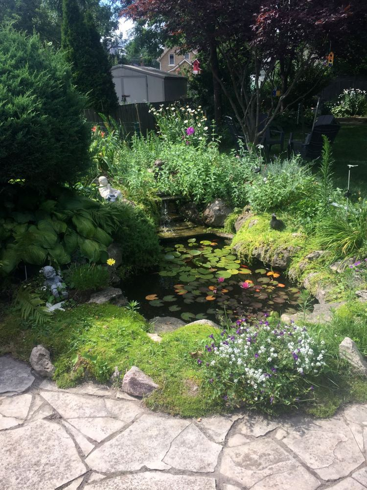
Service areas
Free estimate
We would love to work with you on your next project. Call to set up an appointment for your free, no-obligation estimate, or send us a few details and we'll get back to you.
Call Brian519 200-2876